Linux剑法（第五式）
Linux磁盘分区机制
Linux中只有一个根目录，一个独立且唯一的文件结构，Linux中每一个分区都是用来组成整个文件系统的一部分，Linux采用了一种叫做“载入”的处理方法，它的整个文件系统中包含了一整套的文件和目录，且将一个分区和一个目录联系起来，这使要载入的一个分区将使它的存储空间在一个目录下获得。 我们可以使用指令lsblk或lsblk -f查看分区的挂载情况。

Linux分区
Linux硬盘分为IDE硬盘和SCSI硬盘，目前基本上是SCSI硬盘，对于IDE硬盘，驱动器标识为“hdx”，其中“hd”表明分区所在设备类型，这里是指IDE硬盘，“x”代表盘号（a为基本盘，b为基本从属盘，c为辅助主盘，d为辅助从盘），“”表示分区，前四个分区用1-4表示，从5开始是逻辑分区。对于SCSI硬盘，驱动器标识为“sdx~”，和IDE硬盘的表示方法是一样的
增加磁盘
接下来我们要增加一块硬盘，熟悉一下磁盘的相关指令和深入理解磁盘分区、挂载、卸载的概念。
1.在虚拟机菜单中，选择设置，然后设备列表中添加硬盘，然后点击下一步，修改好我们新硬盘的大小后下一步，完成后重启系统。
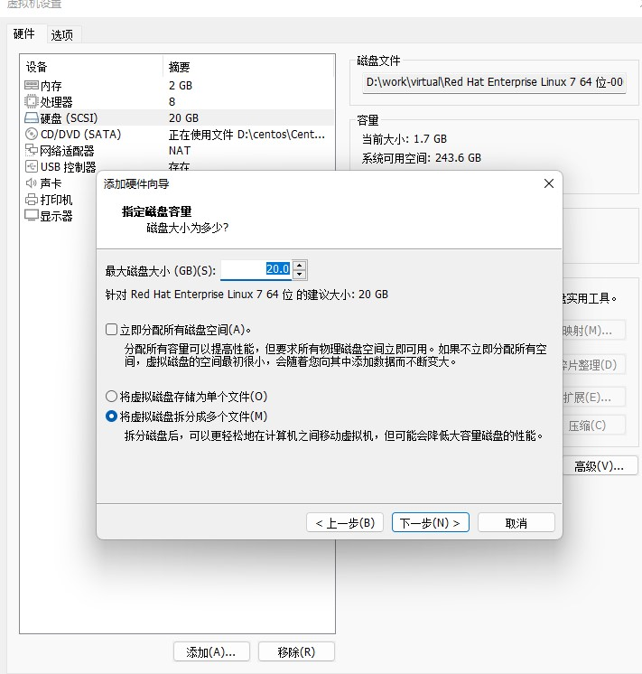
2.重启过后，我们使用lsblk就可以看到我们添加好的硬盘了，接下来我们要为它分区，分区命令为fdisk 设备名称，开始分区后输入n，添加新的分区，然后选择p，分区类型为主分区，两次回车默认剩余全部空间，最后输入w写入分区并退出，如果不保存只退出输入q。我们还可以输入m查看命令列表，输入d删除分区。
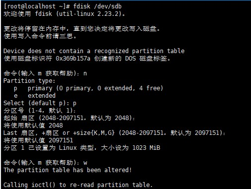
3.第三步，我们要为新的硬盘格式化，分区命令为mkfs -t ext4 设备名称。
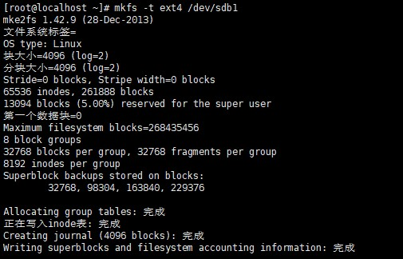
4.我们之前说过Linux将一个硬盘的存储空间挂载到一个目录上，这样就可以通过访问目录来访问对应的存储空间了，所以我们要将新添加的硬盘挂载到目录上，当然我们要先新建一个目录，这样才可以将硬盘挂载上，这个目录最好在根目录/下。挂载的命令为mount 设备名称 挂载目录。
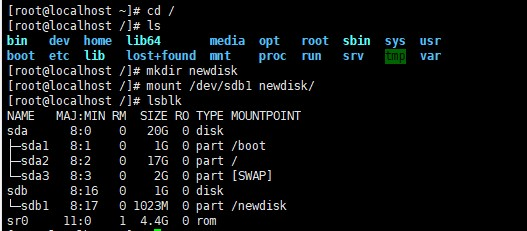
5.虽然我们挂载成功了，但是使用命令行挂载在每一次重启后就会失效，这个时候我们需要修改/etc/fstab实现开机自动挂载。

当我们想将存储空间重新挂载的话，可以使用指令umount 设备名称 挂载目录
磁盘情况查询
现在我们知道如何添加磁盘了，可是我们什么时候添加呢？当然是磁盘的内存不够了的时候添加，可是我们怎么知道磁盘还剩多少内存可以使用呢？我们可以使用指令df -h查看。
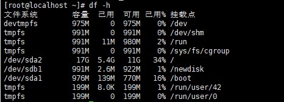
除了查看磁盘整体的内存，我们还可以查看指定目录的磁盘占用情况，指令为du -h /目录，默认为当前目录，它还有别的选项，这里给出几个常用的-s指定目录占用大小汇总，-h带计量单位，-a含文件，–max-depth=1子目录深度，-c列出明细的同时增加汇总值。
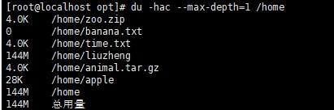
磁盘情况常用指令
在我们工作中可能经常要查看磁盘内容，所以学会使用指令可以大大的方便我们的工作。
统计个数
当我们需要统计文件的个数的时候我们可以使用我们学过的指令组合实现，我们可以使用ll指令获得所有文件通过grep指令进行过滤最后使用wc来进行统计数目，grep指令支持正则表达式，”^-“就表示了我要所有以-开头的文件，所以整体的指令为ls -l 文件夹 | grep “^-” | wc -l。同理我们只要修改正则表达式就可以统计其它类型的文件的个数，比如ls -l 文件夹 | grep “^d” | wc -l就表示统计文件夹下目录的个数。如果我们希望统计包括子文件在内的数目的话只需要在ls的选项中加上一个R即可，也就是ls -lR 文件夹 | grep “^d” | wc -l。
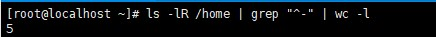
以树状显示目录结构
基本语法：tree 目录

oh！找不到tree指令！真是遗憾，tree指令没有被默认安装，所以如果提示我们找不到tree指令，我们就要手动安装一下，安装指令为yum install tree。安装后我们再次执行这条指令。
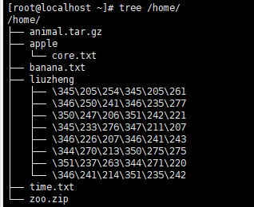
查看网络IP和网关
在Windows下我们在命令行中使用ipconfig指令即可查看Windows的网络信息，同样在Linux下我们可以使用ifconfig查看Linux系统的网络信息。我们之前还是用过ping指令来查看网络是否正确连通，ping指令的格式是ping 目的主机，用来检测当前服务器是否可以连接到目的主机。
设置主机名和hosts映射
少侠，自古以来的用剑高手，都有一把宝剑流传于江湖之上，我们的剑出厂自带一个名字，我们可以用指令hostname。
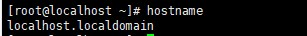
这个名字显然不能表达出少侠的英气，不如少侠为剑重新起一个名字吧，我们修改/etc/hostname文件来重新为剑起名，reboot后生效。
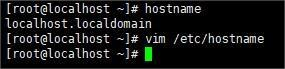
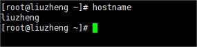
少侠，现在已经为剑取了一个响亮的名字，接下来我们可以通过设置映射，来实现简单的御剑，在Linux下我们可以修改文件/etc/hosts来完成映射，假如我们的pc机叫rog，我们只要在/etc/hosts中写入主机地址 映射名称即可。这样我们可以直接通过ping映射来ping主机。如果没有ping通，可能是因为主机开启了防火墙的原因，关闭即可。
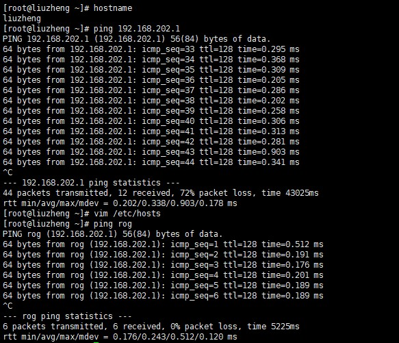
同理我们也可以在Windows下通过修改C:\windows\system32\drivers\etc\hosts文件来设置Linux的映射。
主机名解析过程
刚才我们了解了然后进行简单的御剑，接下来我们了解一下其中的原理，首先我们先了解两个名词，hosts，一个文本文件，用来记录IP和hostname的映射关系，DNS，域名系统，是互联网上作为域名和IP地址相互映射的一个分布式数据库。接下来我们就通过访问百度来理解一下这个过程。
1.当我们在浏览器中输入了百度的网址后，浏览器先检查浏览器缓存中有没有该域名解析IP地址，有就先调用这个IP完成解析，没有就检查操作系统DNS解析器缓存，如果有直接返回IP完成解析，这两个缓存可以理解为本地解析器缓存。
2.一般来说电脑在第一次成功访问某一个网站后，在一定时间内，操作系统会缓存他的IP地址，我们可以在cmd窗口中输入ipconfig/displaydns来查看缓存，使用ipconfig/flushdns来手动清理缓存。
3.如果本地解析器没有找到对应的映射，检查系统中hosts文件中有没有配置对应的域名IP映射，如果有，完成解析并返回。
4.如果本地DNS解析器缓存和hosts文件中均没有找到对应的IP则到域名服务DNS进行解析域，也就是去到公网之上找寻映射。
 wechat
wechat alipay
alipay